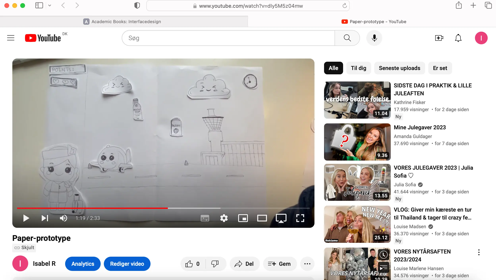
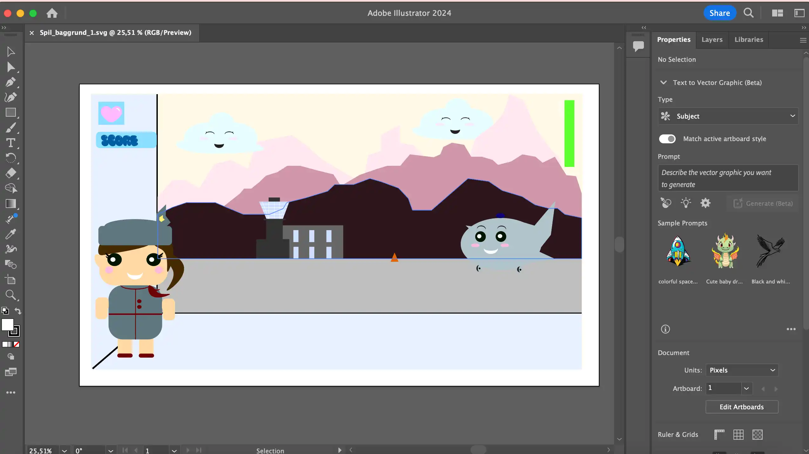
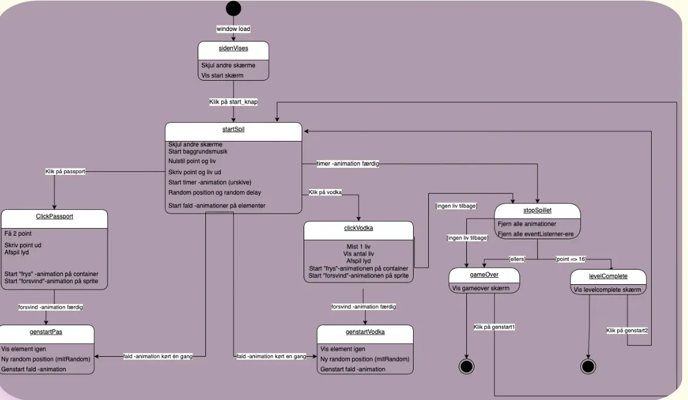
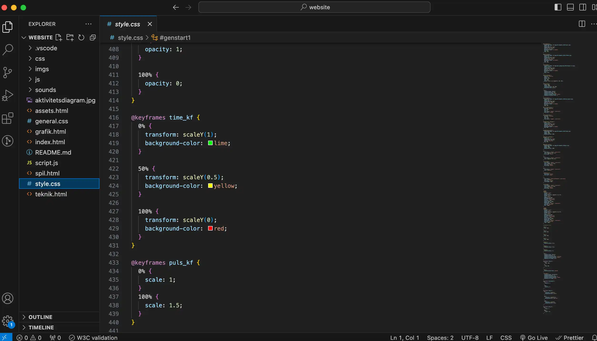
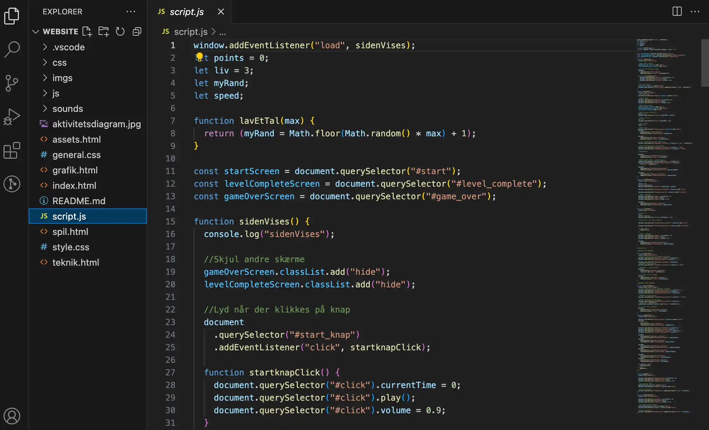

Tema 4 - Animation
Temabeskrivelse
Tema 4 beskæftigede sig med grundlæggende, tværfaglige principper for planlægning, design og udvikling af digitale brugergrænseflader og medieproduktioner baseret på forståelse af afgrænsede udviklingsprocesser. Ydermere skulle vi bruge javascript sammen med css animationer, til at skabe et lille spil som både skulle have et koncept og en idé man selv havde fundet frem til. Derudover designede vi vores egne elementer og kodede spillet helt fra bunden. Vores spildesigns skulle udvikles efter moderne konventioner. Helt konkret startede processen af vores visuelle koncepter i research af valg af genre og stil, som man senere brugte til inspiration til egen fortolkning af design og spil. Dernæst begyndte skitsering i form af moodboards, figur-skitser, layout-skitser og Style Tiles. Til sidst blev rentegninger af grafikken lavet i Adobe Illustrator. Gennem arbejdet med spillet, lærte vi at arbejde med aktivitets-og state machine diagrammer, som blev brugt til at planlægge det mere komplicerede interaktive flow. Afslutningsvis testede vi spillet af i klassen, hvor ens spil blev testet af medstuderende samt modtog feedback via Google Survey.
Hvad har jeg tilegnet mig?
- Adobe Illustrator
- Java Script
- Audition
- Idéudvikling
- Designprincipper
- Aktivitets & State Machine diagrammer
Afleveringer
- 04.01.a Spil idé og papirprototype
- 04.01.d Rentegning
- 04.04.01 Temaopgave
Proces - Airplane Mode
Skitsering
Illustrator
 Skitsering og Illustrator
Vi blev straks kastet ud i idégenerering med hjælp fra 10 ideer øvelsen samt kryds-metode-liste øvelse. Jeg fandt hurtigt på et spil, der skulle foregå i en lufthavn med en stewardesse som main-character. Dernæst gjorde jeg mine overvejelser om hvilken stil jeg ønskede i mit spil. Jeg besluttede mig hurtigt for Kawaii stilen, som tilægger sig principper fra "Baby-bias" - store skinnende øjne, stort rundt hovede og lille næse. Figurene benytter sig af "bouba"-effekten for at fremhæve cuteness-faktoren, hvilket min stewardesse, flyvemaskine og skyer også er inspireret af. Efter jeg besluttede mig for min stil, påbegyndte jeg min paper-prototype. Dette gav mig en bredere visualisering for spillets flow. Fx. man har 20 sek til at indsamle min. 15 pas. Absolut-flasken mister man 1 liv på og man har kun 3 liv i alt. Herfter tegnede jeg mine elementer i Illustrator ved hjælp af cheat-sheetet. Her fandt jeg ud af, hvordan man kan tegne med former i Illustrator og komponere forgrund, mellemgrund og baggrund, så det giver et mere realistisk perspektiv. Udover det lærte jeg at gemme mine Illustrator tegninger i SVG-format, som betyder "Scale Vector Graphics".
Aktivitets-og Statemachinediagram
Svampespillet - css positionering

Diagrammer & CSS positionering
Dernæst i processen, så lavede jeg mit aktivitetsprogram i VSCode med draw.io-udvidelsen, som bruges til at beskrive interaktive systemer. Altså det hjalp på at forstå handlinger og beslutninger i mit spil mere detaljeret og i en bestemt rækkefølge. Efterfølgende udarbejdede jeg mit State Machine diagram, som er endnu mere detaljeret og dermed blev en guide til hvordan spillet skulle kodes i JavaScript. Senere i processen kiggede vi på "Svampespillet" i forbindelse med at lære "position:absolute;", "left;", "right;" og "top;" til at placere ens UI-elementer præcist på titelskærm, baggrundskærm og slutskærm. Denne øvelse hjalp mig rigtigt meget til at forstå opbygningen af spillets design. I denne forbindelse lærte jeg også om "Container & Sprite" princippet, hvilket gjorde at jeg kunne animere sprite og containeren hver for sig. Fx. min pas_container og vodka_container falder ned oppefra, hvorimod pas_sprite og pas_container stopper og zoomer ud, når man klikker på den.
CSS Keyframes
Java Script
 CSS Keyframes & Javascript
I udviklingen af mit spil har jeg benyttet mig af JavaScript og CSS animationer for at skabe et interaktivt og dynamisk spilmiljø. Ved at udnytte forskellige JavaScript og CSS funktioner har jeg opnået en række funktionaliteter. Ved brug af event listeneren window.addEventListener("load", sidenVises); sikrer jeg, at spilfunktionerne aktiveres, når hele vinduet er indlæst. Dette sikrer, at spillet startes korrekt. Jeg har defineret og brugt forskellige variabler som points, liv, myRand, og speed til at holde styr på spildata. Disse variabler ændres dynamisk i løbet af spillet afhængigt af ens handlinger. En central funktion i spillet er lavEtTal(max), som genererer et tilfældigt tal mellem 1 og det specificerede maksimum. Jeg anvender dette til at bestemme positioner og hastigheder i spillet. Jeg har brugt document.querySelector til at få adgang til HTML-elementer og knytte event listeners til dem. For eksempel anvender jeg dette til at reagere på knaptryk og museklik, hvilket aktiverer forskellige spilfunktioner såsom pas/vodka fryser og zoomer ud.
Spilforløbet styres gennem funktioner som startSpil, clickPassport, clickVodka, genstartPas, genstartVodka, og stopSpillet. Disse funktioner håndterer alt fra at starte spillet og håndtere klik på elementer til at håndtere spilafslutninger baseret på point og liv. For at gøre spillet mere livligt og interaktivt har jeg integreret animationer og lydeffekter. For eksempel har jeg brugt CSS animationer (keyframes) til at skabe faldende elementer og tilføjet lydeffekter som "weee"-lyden ved at klikke på passet og når man klikker på vodkaflasken afspilles en lyd af knust glas. Afslutningsvis er der to scenarier for spilafslutning: gameOver og levelComplete. Begge disse funktioner styrer, hvordan spillet afsluttes, og hvilke skærme der skal vises afhængigt af spilresultatet. Denne proces kombinerer grundlæggende JavaScript-programmering med brugen af HTML og CSS for at skabe et interaktivt og underholdende spil.